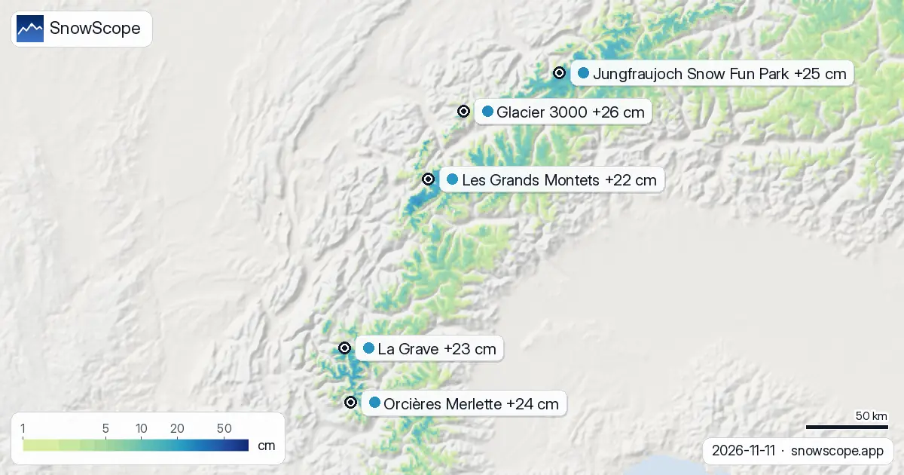

Méribel, condiciones de nieve: 24 cm en la cima y 99 cm en camino (12 de noviembre de 2026)
El invierno de Méribel está a punto de recibir su primera entrega de verdad. La pasada del modelo del 11 de noviembre muestra 24 cm en la cima (2920 m), 1 cm a media montaña (2026 m) y nada en el pueblo a 1132 m, pero la previsión a siete días es el titular: 99 cm de nieve nueva en la cima, 58 cm a media montaña y 3 cm en el valle, con 18 cm en la cima solo en las próximas 24 horas.
Consulta la previsión de nieve en tiempo real de Méribel en la app SnowScopeEspesor de nieve, alertas de nieve polvo y mapa 3D, gratis.
Dónde está la nieve ahora
Las crestas altas de la estación, el lado de la Saulire y el Mont Vallon que une Méribel con Courchevel y Val Thorens en Les 3 Vallées, llevan 24 cm tras 18 cm en los últimos siete días. La media montaña, por donde bajan la mayoría de las pistas hacia Mottaret, tiene 1 cm, y la semana pasada añadió 7 cm allí. El valle está seco.
Tome las cifras como una estimación del modelo para la zona: una pértiga en una hondonada a la sombra marcará más, una ladera al sol menos, y la nieve temprana es agua de la que el suelo y el sol aún se llevan su parte.

La semana que viene
La previsión pone 99 cm en la cima y 58 cm a media montaña en siete días, 18 cm en la cima en las primeras 24 horas. Si cae como lo modela, la media montaña pasa de 1 cm a una primera base en una sola semana, y la cima supera un noviembre habitual.
Una previsión de este tamaño lleva un margen amplio: la primera tormenta es la parte segura, el total no. El viento en las crestas altas también moverá mucha hacia las hondonadas.
Méribel frente a su propio pasado
En nuestros 46 inviernos pasados (1980-81 a 2025-26), la primera nieve está en la cima el 26 de septiembre, a media montaña el 11 de octubre y en el valle el 3 de noviembre. Un noviembre habitual guarda 4 cm en la base, 19 cm a media montaña y 62 cm en la cima; diciembre sube a 20, 55 y 139 cm.
El máximo de un invierno medio vale 54 cm en el valle, 159 cm a media montaña y 343 cm en la cima, y 18 semanas del invierno tienen 50 cm o más a media montaña en 9 de cada 10 inviernos. El invierno pasado llegó a 67, 174 y 312 cm.
Para una reserva en diciembre
Los meses más nevosos de Méribel arriba son marzo y abril (267 cm y 297 cm en la cima), pero diciembre ya es cómodo a media montaña en la mayoría de los inviernos (55 cm). El dominio cartografiado cuenta 142 km de pistas y 46 remontes entre 1132 m y 2920 m. Siga la tormenta de esta semana, y después la línea de diciembre.
Consejos para esquiadores
- Vigile las próximas 24 horas en la cima: los 18 cm son la parte de la previsión con la que se puede contar.
- Nieve nueva sobre una base de 1 cm no es una base esquiable: espere a la apertura de la estación y a su propio parte de pistas.
- Los grandes totales de nieve nueva elevan el peligro de aludes: el boletín de Météo-France se aplica a cualquier plan de fuera de pista.
Más mapas (sitios externos)
Referencias y créditos
- Méribel, web oficial (remontes, fechas de apertura, parte de pistas) www.meribel.net/
- Météo-France, meteorología de montaña y boletines de aludes meteofrance.com/meteo-montagne
Sobre estas cifras
Cifras de nieve: el modelo de nieve de SnowScope, pasada del 11 de noviembre de 2026, a tres alturas de la estación (una estimación del modelo para la zona, no medidas de la estación), y nuestro histórico de nieve, 46 inviernos pasados (1980-81 a 2025-26), un modelo del pasado corregido por altitud. Longitud de pistas y número de remontes: cartografía OpenSkiMap. Las previsiones cambian: mire el mapa antes de salir.
Boletines oficiales de aludes: Météo-France – Bulletin d'estimation du risque d'avalanche
Citar este informe
Para investigación, docencia o prensa: cifras y gráficos reutilizables libremente bajo CC BY 4.0 con esta cita.
SnowScope (2026), Méribel, condiciones de nieve: 24 cm en la cima y 99 cm en camino (12 de noviembre de 2026), https://snowscope.app/blog/es/2026/11/meribel-snow-conditions-12-november-2026.html, consultado el 2026-11-12
SnowScope (Atlas Labs). (2026, November 12). Méribel, condiciones de nieve: 24 cm en la cima y 99 cm en camino (12 de noviembre de 2026). SnowScope snow reports. https://snowscope.app/blog/es/2026/11/meribel-snow-conditions-12-november-2026.html
BibTeX
@misc{snowscope2026meribelsnowconditions12n,
author = {{SnowScope (Atlas Labs)}},
title = {Méribel, condiciones de nieve: 24 cm en la cima y 99 cm en camino (12 de noviembre de 2026)},
year = {2026},
month = nov,
howpublished = {\url{https://snowscope.app/blog/es/2026/11/meribel-snow-conditions-12-november-2026.html}},
note = {Published 2026-11-12 09:23 UTC; accessed 2026-11-12}
}· CC BY 4.0 · Métodos, datos y herramientas →
Méribel: nieve y temperatura según la altura, este invierno vs el pasado (herramientas) →
Sigue Méribel
Gratis: un aviso cuando llega la nieve y la previsión cada mañana.
Más partes de nieve

Dévoluy, tendencia de nieve: hasta 24–32 cm posibles hasta el 16 de noviembre (Alpes). Hasta el 16 de noviembre, nuestra previsión da 35 cm en …

Nuestras elecciones son La Grave, Pfelders y Les Deux Alpes: miramos el espesor de nieve de hoy, la nieve nueva de las últimas 72 horas y la …

La zona blanca del mapa pasó de 45.820 km² (9 de noviembre) a 38.440 km² hoy, y la previsión dice 46.730 km² el 14 de noviembre. Glacier 3000: +26 cm …